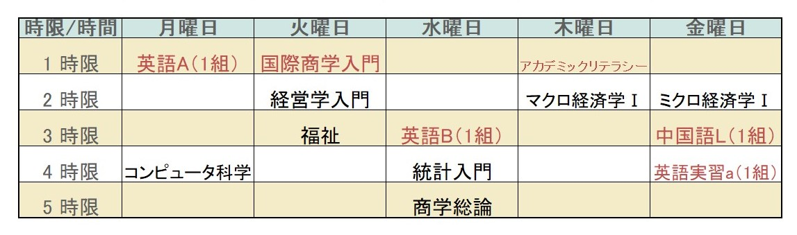
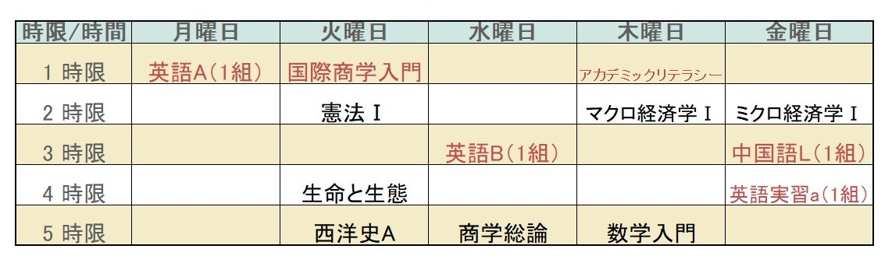
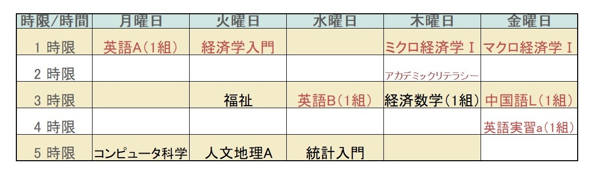
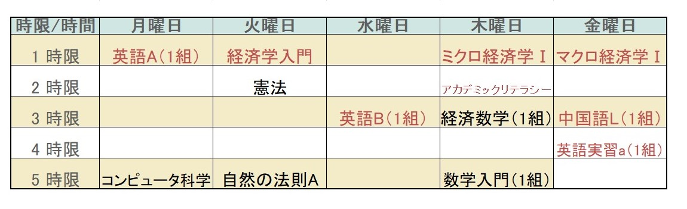
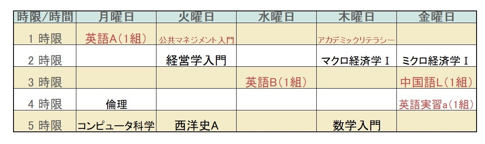
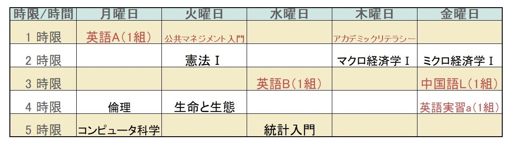

下関市立大学（非公式）
新入生のための履修の組み方
国際商学科・経済学科・マネジメント学科
履修を組む前に伝えたいこと
- 本来ならば1年春学期の履修はすべて先輩に決めてもらうものです。困って当然です。
- 1年生のうちに必ず取得しなければならない科目＝必修科目があります。
- 1年生は選択できる科目がほとんどありません。ほとんどの人が同じ時間割になります。
- 1年生の履修登録期間が決まっています。忘れずに登録しましょう。
- 大学の授業は同じ時間帯の複数の授業が開講されます。もし、取りたい授業がかぶった場合はどちらかを優先させなければなりません。
- 履修を組む際は、必ずシラバスを確認するようにしましょう。シラバスとは授業の説明書のことです。 単位取得条件や教科書や各回で学ぶ内容が記載されています。
履修の組み方
- STEP1
時間割表を用意する（手書きでOK） - STEP2
必修科目を時間割表に書き込む - STEP3
残ったコマに希望の授業を入れ込んでいく
見本
国際商学科


経済学科


公共マネジメント学科


ポイント
- 専門教育科目は全て取るのがベター
- 公務員を目指す人は、「憲法」を受講する
- 例年「楽単」と言われる教養科目は「心理・福祉・人文地理・西洋史」